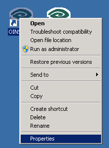
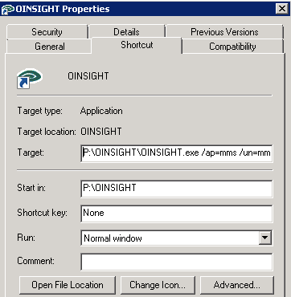
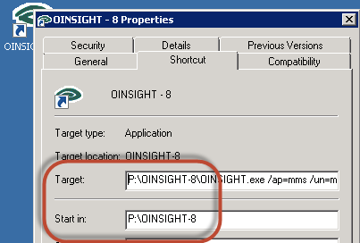

Home > Helpdesk

Tutorial
This document outlines how to duplicate a shortcut. |
|
Introduction
This document details how to copy your Powerforce shortcut. Identify the details of your original shortcut, then using File Manager, copy your original shortcut.
Having copied your shortcut, identify the details as shown below. The important item to note is the detail of the "start in" field. In the image below "P:\OINSIGHT".
 
SDetails of
Y
Top of Page
Step 2
Having copied your original shortcut, change the previous values of "P;\OINSIGHT" to the directory into which your new version of Powerforce has been copied. In the example below, the new version is in "P:\OINSIGHT-8" as shown in the "Start in" directory.

Top of Page
Explanation
Ye".
Top of Page
See Also
 PowerForce Controls PowerForce Controls

Article updated by PowerForce Software on Monday, August 06, 2012.
Copyright ©2007-2013 Envizion Systems - All Rights Reserved - Terms of Use.
|